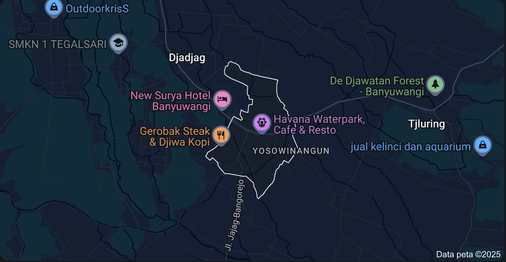

Informasi Umum Desa
Desa Jajag merupakan desa strategis di Kabupaten Banyuwangi. Memiliki potensi besar dalam sektor ekonomi, pariwisata, dan pelayanan publik.
- Ekonomi: Pasar tradisional, perikanan, UMKM
- Pendidikan: Akses sekolah dasar hingga menengah
- Transportasi: Terminal antarprovinsi dan jalur strategis
- Digitalisasi: Pelayanan online & sistem informasi desa

Layanan Administrasi Online
Permohonan KTP
Ajukan pembuatan atau perpanjangan KTP dengan mudah secara online.
Permohonan KK
Daftarkan atau perbarui Kartu Keluarga tanpa harus ke kantor desa.
Surat Domisili
Dapatkan surat keterangan domisili untuk berbagai kebutuhan Anda.
Pengumuman Terbaru
Pemeriksaan Kesehatan Gratis
Akan diadakan pada 1 Juni 2025 di Balai Desa. Terbuka untuk umum.
Diumumkan: 25 Mei 2025Pendaftaran BLT Tahap II
Dibuka hingga 10 Juni 2025. Siapkan berkas pendukung.
Diumumkan: 20 Mei 2025Hubungi Kami
Email: desajajag12@gmail.com
Telepon: 081217269676
Alamat: Jl. Achmad Yani No. 12, Jajag, Banyuwangi